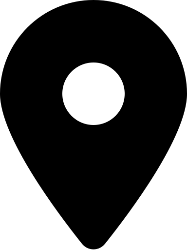
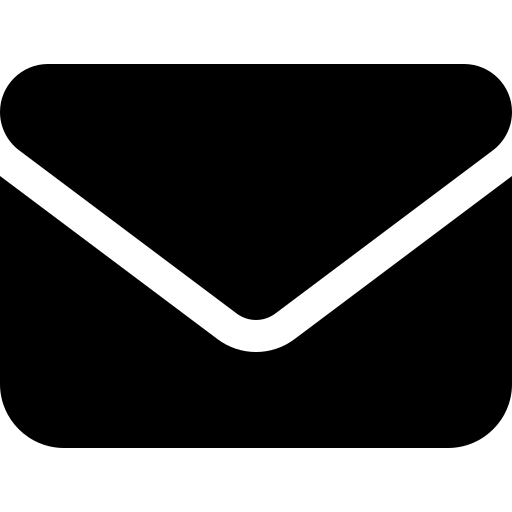
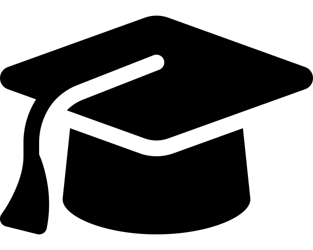

My name is Shangding Gu (顾尚定), and I am a tenure-track Associate Professor in the School of Computer Science at Shanghai Jiao Tong University. Before joining SJTU, I was a postdoctoral researcher in the Department of EECS at UC Berkeley, where I was fortunate to have the opportunity to work with Prof. Costas Spanos and Prof. Dawn Song. In 2024, I earned my Ph.D. in Computer Science from Technical University of Munich, where I was fortunate to be advised by Prof. Alois Knoll. I serve as a youth editorial board member for multiple international journals, a guest editor for IEEE TASE, Area Chair for NeurIPS, and a chair/organizer of multiple international workshops and seminars. I have also delivered tutorials on safe reinforcement learning at major international conferences, including IJCAI and IEEE SmartGridComm. I have received multiple grants and scholarships to support my research, including from Nvidia, OpenAI, and Bosch.

406 Cory Hall, Berkeley, CA 94720
shangding.gu@sjtu.edu.cn
Google Scholar Twitter Agentic AI Frontier Seminar
Agentic AI Frontier Seminar
 Personal Github
Personal Github
 SAIL Lab Github
AI Agent Research YouTube Channel
SAIL Lab Github
AI Agent Research YouTube Channel
Research Interests
My current research focuses on reinforcement learning, planning, and AI safety, with applications in foundation models (e.g., large language models and multimodal models), robotics, and semiconductor manufacturing. My goal is to design safe, reliable, and efficient systems that address pressing real-world challenges and drive impactful applications across diverse domains. My work has been featured in leading publications, including top-tier journals and conferences such as the Journal of Artificial Intelligence, IEEE Transactions on Pattern Analysis and Machine Intelligence, NeurIPS, and other prestigious venues.
I am a lead guest editor for IEEE Transactions on Automation Science and Engineering, for the Special Issue on Trustworthy AI for Automation Control of Embodied Agents in the Era of Foundation Models. Call for Papers.
We have a small research group working on AI safety, machine learning, LLMs, and robotics. If you are interested in our research, please contact me with details about your background and relevant skills.
Selected Platforms & Products
Beyond research, I am building AI systems and platforms that translate research ideas into practical tools for researchers, developers, and users.
ScholarMate
An AI research companion that reads your Google Scholar profile and delivers the most relevant new arXiv papers — personalized and ranked.
Visit →CheetahClaws
An open-source, fast personal AI assistant for any model — a multi-provider agent CLI with 33 built-in tools, daemon mode, and remote control.
Visit →AI Shopping Assistant
An agentic shopping tool that searches and compares prices across retailers to find the best deals from a single natural-language request.
Visit →Selected Recent Preprints
-
Agentic web: Weaving the next web with ai agents.
Yingxuan Yang, Mulei Ma, Yuxuan Huang, Huacan Chai, Chenyu Gong, Haoran Geng, Yuanjian Zhou, Ying Wen, Meng Fang, Muhao Chen, Shangding Gu, Ming Jin, Costas Spanos, Yang Yang, Pieter Abbeel, Dawn Song, Weinan Zhang, Jun Wang
[Paper], [Code], [IEEE Spectrum], [The Economist], [机器之心]
Selected Recent Publications
Recent News
03.2026: Our papers on reinforcement learning for drug design got accepted by Science Advances.
03.2026: Invited to serve as an Area Chair for NeurIPS 2026.
11.2025: Gave a talk on Safe Robot Learning at Shankar Sastry Group, UC Berkeley.
10.2025: Gave a talk on Safe Learning at the Applied Mathematics and Statistics Department Postdoctoral Seminar at Johns Hopkins University.
09.2025: Our papers on safe RL and LLMs got accepted by NeurIPS 2025 and EMNLP 2025
08.2025: I will be giving a talk at the 2025 INFORMS Annual Meeting in Atlanta, Georgia, USA (October 26–29). Looking forward to connecting with you there!
07.2025: We released Agentic Web, a study on the web agent research: Paper | Github
05.2025: We released M4R, a benchmark for evaluating massive multimodal understanding and reasoning in open space. Code, dataset, and leaderboard are available at: https://open-space-reasoning.github.io
05.2025: We released RLBenchNet, a systematic benchmarking suite for evaluating neural network architectures in reinforcement learning. Code is available at: https://github.com/SafeRL-Lab/BenchNetRL
04.2025: Gave a talk on Safe Robot Learning at Mac Schwager's Lab, Stanford University.
03.2025: Received a grant from Nvidia to support my research!
03.2025: I am a lead guest editor for the prestigious journal IEEE Transactions on Automation Science and Engineering, for the Special Issue on Trustworthy AI for Automation Control of Embodied Agents in the Era of Foundation Models. See Call for Papers.
01.2025: Our paper on robust reinforcement learning got accepted by ICLR 2025
01.2025: We launched the 1st International Workshop on AI Agent Reasoning and Decision-Making (AIR 2025), see workshop homepage
01.2025: Received a grant from OpenAI to support my research!
01.2025: Our paper on safe multi-objective reinforcement learning got accepted by IEEE Transactions on Pattern Analysis and Machine Intelligence
12.2024: Our paper on reinforcement learning for data generation in large language models got accepted by Transactions on Machine Learning Research
12.2024: Invited as a member of the youth editorial board for the Journal of Artificial Intelligence and Autonomous Systems
12.2024: Our paper on mutual enhancement of reinforcement learning and large language models got accepted by AAAI 2025 Workshop LM4Plan
12.2024: Our paper on safe reinforcement learning for unmanned ship multi-objective path planning got accepted by Ocean Engineering
11.2024: Invited lecture on safe reinforcement learning and its applications in Virginia Tech's Machine Learning course
11.2024: Our paper on high-throughput parallel reinforcement learning framework got accepted by IEEE Transactions on Parallel and Distributed Systems
10.2024: Our paper on safe multi-agent reinforcement learning for autonomous driving got accepted by IEEE Transactions on Artificial Intelligence
09.2024: Our paper on efficient safe reinforcement learning got accepted by NeurIPS 2024
09.2024: We presented a tutorial on safe reinforcement learning for smart grid control and operations at IEEE SmartGridComm 2024, see Slides
09.2024: Our paper on safe reinforcement learning got accepted by IEEE Transactions on Pattern Analysis and Machine Intelligence (IF: 20.8)
08.2024: We presented a tutorial on safe reinforcement learning: bridging theory and practice at IJCAI 2024, see Slides
08.2024: Invited lecture on safe robot learning in WHUT summer course
07.2024: Our paper on robust safe robot learning got accepted by IEEE Transactions on Automation Science and Engineering (IF: 5.9)
05.2024: Join us at SmartGridComm 2024 Workshop on Safe RL for Smart Grid Control and Operations (Call for Contributions)
04.2024: Our paper on safe learning for real-world robot control got accepted by IEEE Transactions on Industrial Informatics (IF: 12.3)
03.2024: Join us at IJCAI 2024 Workshop on Trustworthy Interactive Decision Making with Foundation Models (Call for Contributions)
12.2023: Our paper on safety and reward balance for safe RL got accepted by AAAI 2024 (Oral Paper)
10.2023: Our paper on a safe human-robot learning framework got accepted by Frontiers in Neurorobotics
08.2023: Our paper on RL for autonomous driving parking lots got accepted by IEEE Transactions on Cybernetics (IF: 11.8)
06.2023: Our paper on offline RL with uncertain action constraint got accepted by IEEE Transactions on Cognitive and Developmental Systems
03.2023: Our paper on safe multi-robot learning got accepted by the journal of Artificial Intelligence (IF: 14.4)
12.2022: We launched a long-term safe reinforcement learning online seminar. Every month, we will invite at least one speaker to share cutting-edge research with RL researchers and students (each speaker has about 1 hour to share his/her research). We believe that holding this seminar can promote the research of safe reinforcement learning. For details, please see the Seminar Homepage
11.2022: Invited a safe RL talk at the RL China community
10.2022: Invited a safe RL talk at Prof. Jan Peters' lab
09.2022: We launched the 1st Safe RL Workshop @ IEEE MFI 2022